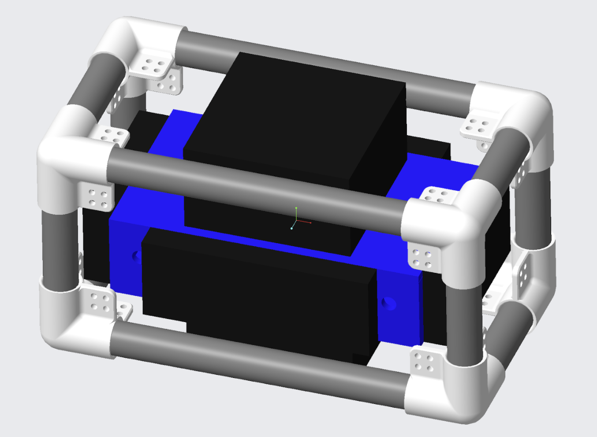
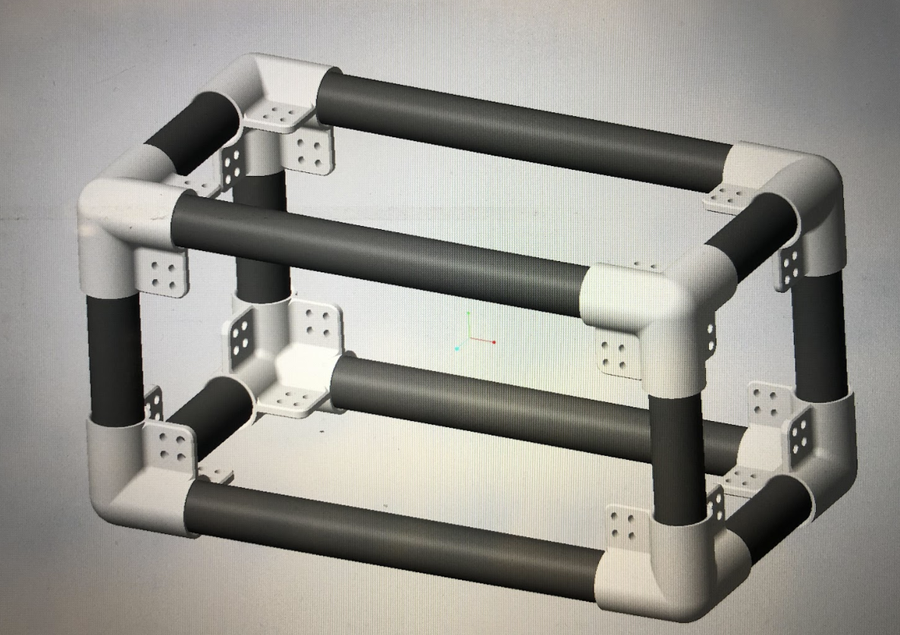
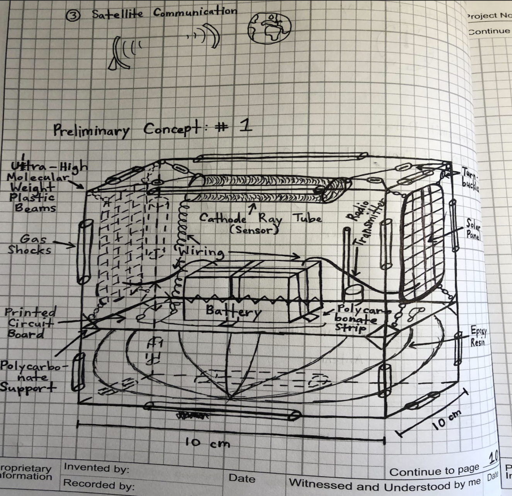
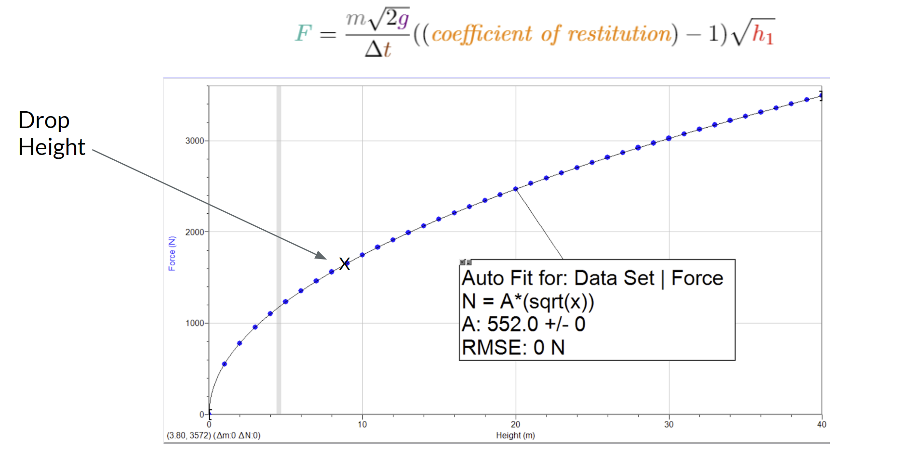
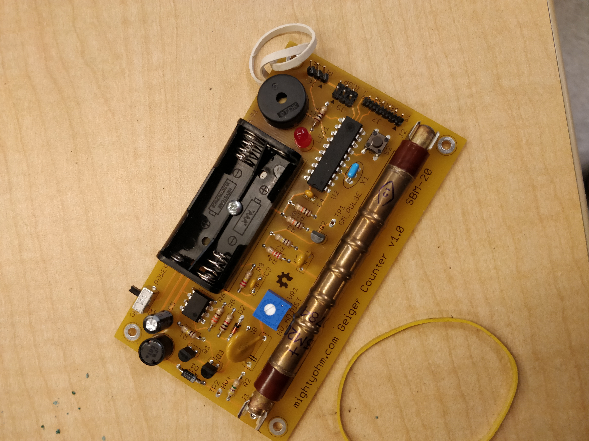
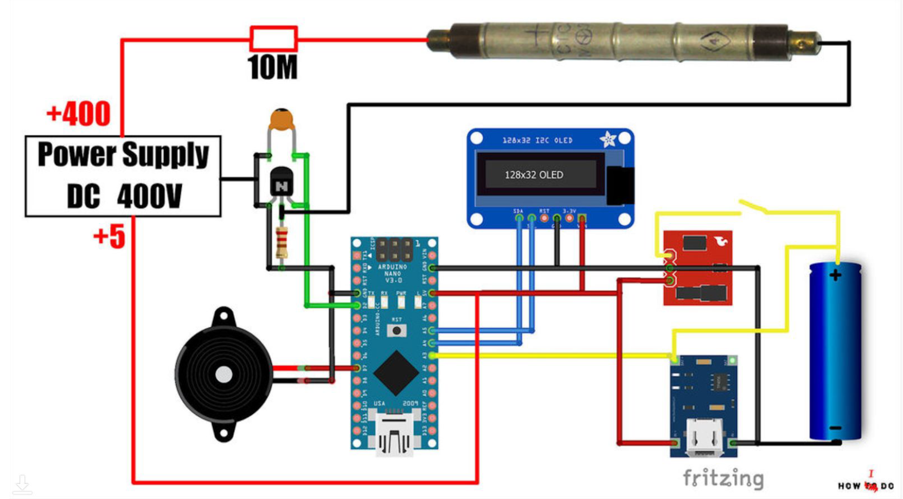

Mechanical design project to construct and model a CubeSat with a working Geiger counter

Constructed a CubeSat enclosure for a self-made Geiger counter. When determining viability for life on new planets, a major risk is electromagnetic radiation from a weak atmosphere. By sending a cheap, small CubeSat to a few locations around a newly discovered planet, it is easy to determine the strength or presence of a magnetosphere. Strong presence of a magnetic field indicates a molten planet core (something hard to detect with telescopes) and protection from radiation. This project is a proof-of-concept for a cheap option.
Magnetospheres are important for viable planets for human habitation, but they are challenging to detect without direct measurement. Current physical probes to measure radiation like the RAVAN CubeSat by NASA are extremely expensive. In this project, we mocked up a cheap alternative that can detect radiation and can withstand 500N forces.
We used carbon fiber tubes with 3D printed tube fittings. The printed parts had a low-infill so they could absorb force upon impact while they crumble. The system is heavily padded around a cheap, custom-made Geiger counter. The solution has heavy padding to protect the Geiger counter without having metal that will impact readings.
Since the CubeSat only had metal in the Geiger counter, it should easily detect high levels of radiation on exoplanets to identify suitability for human inhabitance. This was the first project I combined physics, electronics, and computer-aided design. I learned to solder and apply materials testing to switch from a metal encasement to a carbon fiber and plastic encasement.




